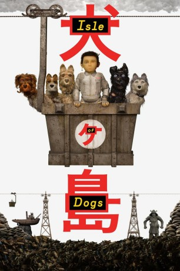

#9470 Ataris Reise
Alternativ: Isle of Dogs
 
 IMDB-Wertung: 8.0 / 10
IMDB-Wertung: 8.0 / 10  Metascore: 82
Metascore: 82 
Der Ausbruch einer Hundegrippe veranlasst den Bürgermeister von Magasaki City, alle Hunde auf die abgelegene Insel Trash Island zu verbannen. Bald darauf landet der 12-jährige Junge Atari auf der Insel und die Verstoßenen machen sich mit ihm auf die Reise, um sein geliebtes Haustier wiederzufinden.
Jahr: 2018
Dauer: 101 Minuten
FSK: 6
Land: Deutschland Studio: 20th Century Fox GermanyTonspuren: DTS - ,
Untertitel: Deutsch,
Auflösung: 1080p (1920x808) Größe: 4188 MB
Genre: Drama, Sci-Fi, Komödie, Abenteuer, Fantasy, Animation/Trick
Regisseur:  Wes Anderson
Wes Anderson
Drehbuch: Wes Anderson, Roman Coppola, Jason Schwartzman, Kunichi Nomura, Wes Anderson
Soundtrack: Alexandre Desplat
Darsteller:
 Bryan Cranston als Chief
Bryan Cranston als Chief- Koyu Rankin als Atari
 Edward Norton als Rex
Edward Norton als Rex Bob Balaban als King
Bob Balaban als King Bill Murray als Boss
Bill Murray als Boss Jeff Goldblum als Duke
Jeff Goldblum als Duke Akira Takayama als Major-Domo
Akira Takayama als Major-Domo Greta Gerwig als Tracy Walker
Greta Gerwig als Tracy Walker Frances McDormand als Interpreter Nelson
Frances McDormand als Interpreter Nelson- Akira Ito als Professor Watanabe
 Scarlett Johansson als Nutmeg
Scarlett Johansson als Nutmeg Harvey Keitel als Gondo
Harvey Keitel als Gondo F. Murray Abraham als Jupiter
F. Murray Abraham als Jupiter- Yoko Ono als Assistant-Scientist Yoko-ono
 Tilda Swinton als Oracle
Tilda Swinton als Oracle Ken Watanabe als Head Surgeon
Ken Watanabe als Head Surgeon Fisher Stevens als Scrap
Fisher Stevens als Scrap Liev Schreiber als Spots
Liev Schreiber als Spots Courtney B. Vance als The Narrator
Courtney B. Vance als The Narrator Roman Coppola als Igor
Roman Coppola als Igor Anjelica Huston als Mute Poodle
Anjelica Huston als Mute Poodle Takayuki Yamada als Junior Scientist 1
Takayuki Yamada als Junior Scientist 1- Ryûhei Matsuda als Junior Scientist 4 / Bartender
 Jake Ryan als Junior Interpreter Ernie
Jake Ryan als Junior Interpreter Ernie Frank Wood als Simul-Translate Machine
Frank Wood als Simul-Translate Machine- Alex Orman als Aboriginal Dog
 Kara Hayward als Peppermint
Kara Hayward als Peppermint- Kunichi Nomura als Mayor Kobayashi
- Mari Natsuki als Auntie
- Nijirô Murakami als Editor Hiroshi
- Satoshi Yamazaki als Taiko Drummer
- Gen Ueda als Taiko Drummer
- Yôjirô Noda als News Anchor
- Kozue Akimoto als Junior Scientist 2
- Shôta Matsuda als Junior Scientist 3
- Jun Takahashi als Mission Control Drone Pilot
- Luli Shioi als Mission Control Technician
- Erica Dorn als Mission Control Technician
- Chinami Narikawa als Mission Control Technician
- Elaiza Ikeda als Punk Girl
- Ikunosuke als Daily Manifesto Student
- Taichi Kodama als Daily Manifesto Student
- Karin Okoso als Daily Manifesto Student
- Edward Bursch als Owl
- Chris Benz als Aboriginal Dog
- J. Wurster als Aboriginal Dog
- Kiyotaka Mizukoshi als Election Night Tabulator
- Ryuhei Nakadai als Surgical Assistant
- Shin Mononobe als Surgical Assistant
Datei: X:\Kinder Anime\Div Anime\Ataris Reise (2018, FSK6, 1920x808).mkv seit 04.09.2018
Festplatte: Kinder-Filme+Trick
 Es gibt insgesamt 40 Filme in der Gruppe 'Kinder Anime\Div Anime'
Es gibt insgesamt 40 Filme in der Gruppe 'Kinder Anime\Div Anime'